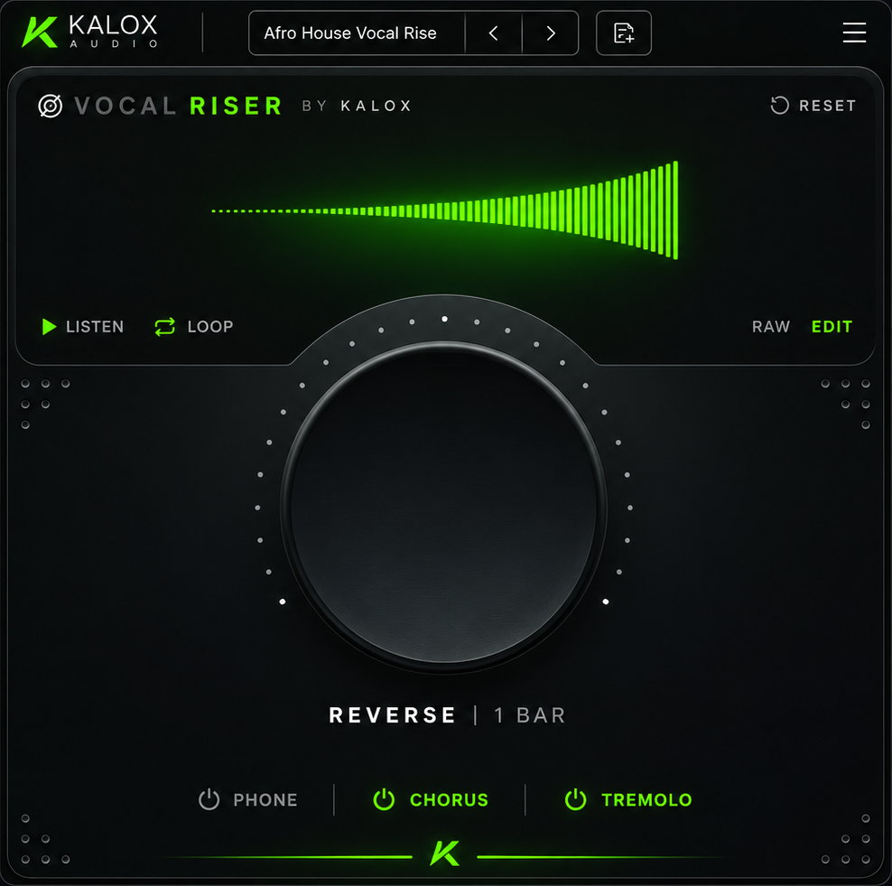
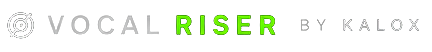

R$ 9,99
PAGAMENTO ÚNICO
PIX OU CARTÃO
MACVST3 · AU
WINDOWSVST3
Ableton · FL Studio · Logic
Studio One · Reaper
Studio One · Reaper
📱COMPRA PELO CELULAR
▼
✉️LINK NO E-MAIL
▼
💻BAIXA NO PC
TOCA EM SAIBA MAIS👇kaloxproduction.com · link na bio
PARA DE DESENHAR
AUTOMAÇÃO
AUTOMAÇÃO
REVERSE DE
1 A 4 COMPASSOS
1 A 4 COMPASSOS
CHORUS · TREMOLO · PHONE
AJUSTA TUDO
DEPOIS
DEPOIS
UM BOTÃO SÓ
RISER PRONTO
PRO DROP
PRO DROP